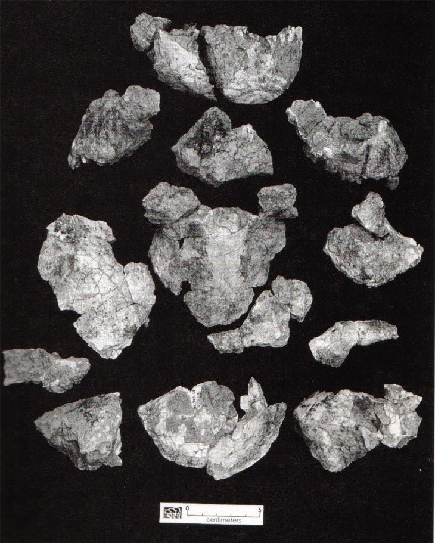
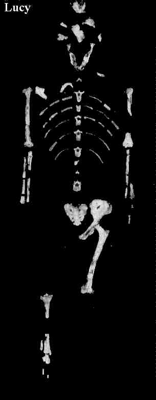

| Feature Article - February 2000 |
| by Do-While Jones |
One of the best known "human ancestors" is an Australopithecus afarensis skeleton called Lucy. Probably nobody knows more about Lucy and her species than her discoverer, Donald Johanson. So let's see what Donald Johanson has to say about Australopithecus afarensis.
| Of the 250 hominid fossils we found at Hadar between 1973 and 1975 that led to the naming of a new species, Australopithecus afarensis, the earliest bones are from 3.4 million years ago. Dato's discovery--if it was 3 million years old--had allowed us to double our estimates as to the length of time that hominids lived at Hadar. 1 |

These "16 fossils" make up just part of one skull. Our most observant readers will immediately notice that it is a male skull.
Just how was this skull found? We are so glad you asked.
|
We went looking for Yoel Rak, an Israeli paleoanthropologist who had interrupted his anatomy lectures at Tel Aviv University to join us in the field. Yoel had looked furiously for hominid fossils at Hadar in 1990 but came up empty-handed. He said he couldn't leave this year without finding a hominid, and as an expert on the australopithecine face, what he really wanted was a skull, which had so far eluded us. 2
... Perhaps because Yoel was with me, I began mentally picturing skull fragments--smooth, flat, slightly dished pieces of bone. Then I blew away some soft sand in front of me and saw the edges of a pair of eye sockets. "Oh my God," I shouted. "Here's part of the skull. We've got glabella!" Glabella, one of the reference points used for skull measurements, is the most forward projecting part of the forehead, just above the bony ridge over the eye sockets. 3 |
This brings up a question of objectivity. Evolutionists sometimes criticize creationists for starting with a preconceived notion, and then looking for evidence to back up that conclusion. If it is wrong for creationists to do this, then it is wrong for evolutionists to do it, too. There should not be a double standard.
We don't entirely agree with the evolutionists' claim that it is wrong to look for data to support a theory. You rarely find something unless you are actively seeking it. There are scientists who believe there is a cure for AIDS, and they are looking for it. There is nothing wrong with that. It only becomes wrong if the desire to find the cure makes you consciously (or unconsciously) report the results incorrectly. That is, there is nothing wrong if a zealous doctor actually finds a cure for AIDS. There is something wrong if he manipulates the data to make it appear that he has found a cure when he hasn't.
So, we don't blame Yoel Rak and Donald Johanson for looking for a hominid skull. We realize, however, that their strong desire to find something may have affected their analysis of what they actually discovered. Johanson certainly seemed to make a positive identification of a fragmentary bone very quickly.
Therefore, we are just a little bit cautious about taking the Australopithecus face he found at face value.
| In October 1973, we arrived at Hadar with nine other French and American scientists, prepared for a two-month stay. By this time I had left Chicago and taken a job teaching anthropology at Case Western Reserve University, in Cleveland. With these credentials, I had managed to get some funding for my first expedition as a co-leader. I knew, though, that I had to prove myself by finding some hominids or the money would dry up. 4 |
Imagine what would have happened if he had found these fossils and reported, "I found a lot of ape bones." You can almost hear the money cracking as it dries up.
Does money really influence the interpretation of data? That's hard to say, but after almost 30 years working in the defense industry, I've noticed an interesting pattern. Whenever a weapon system is in trouble, and its funding is about to be cut off, the test results show that the weapon works well enough to go into production. Then, after the weapon is introduced into the fleet, and funding is about to be cut because the project was successfully completed, there always seems to be a study that shows that the weapon doesn't work well enough, and a "product improvement program" gets funded. Is it just a coincidence that studies always seem to come to the conclusion that brings the most money?
Remember the "evidence of life" found on the "Martian Meteorite" in August, 1996? That sure gave the NASA Mars program a big boost. By December 14, 1996, Science News reported that, "they don't have a shred of evidence to back it up." Do you think money was a factor in the initial report?
A passionate desire to prove evolution (and a pressing need to fund further research) may have affected Johanson's analysis. Consider this statement:
| I found a bone from the palm of the hand, a second metacarpal, looking more like a fresh twentieth-century bone than one that had been buried for 3 million years. 5 |
Did he ever consider, even for a moment, the possibility that it doesn't look 3 million years old because it really isn't 3 million years old? Could it look more like a 20th century bone because it might be just a few hundred years old?
There are probably evolutionists reading this who are thinking to themselves, "That's ridiculous. That bone couldn't be hundreds of years old because Australopithecines died out 3 million years ago." How do they know when they became extinct? Evolutionists claimed that the coelacanth had been extinct for millions of years before one was captured alive a few years ago. Maybe Johanson has actually found evidence that Australopithecines lived in modern times. He says it looks fresh. Maybe it is fresh.
| Though we had no confirmed dates yet from the rocks at Hadar, by comparing other mammal fossils from Hadar, especially pig teeth, with those that had been found at the Omo, Tom Gray and I suspected that the knee joint could be between 3 and 4 million years old. 6 |
When radioactive dating gives the desired results (i.e., the same as the presumed age of the pig fossils), then radioactive dating is considered to be precise and accurate. But when it gives different ages, then the radioactive dates are swept under the rug with statements like this one:
| The site, known as Gona, has hundreds of stone tools--flaked pebbles and cobbles of lava--that may be the oldest example of human technology, some 2.5 million years old. The ash layers at Gona, however, do not give reliable dates, and Bob has been struggling since 1975 to determine the age of these artifacts. 7 |
When that was written in 1994, poor old Bob had been trying for almost 20 years to get a radioactive date close enough to 2.5 million years that people would believe it. We wonder how many times he tried, and what dates he actually got. Did he consistently get 50 million years? Did he get ages that vary from 1 million years to 200 million years? We will never know because they won't be published. The justification for not publishing them will be, "There is no reason to publish them because they are obviously erroneous."
|
Separated by 200,000 years, these fossils were almost identical--making a good case for little evolutionary change in this hominid species. From fossils found at a site south of Hadar, the Middle Awash, we know that Australopithecus afarensis existed as far back as 3.8 million years ago, so it seems to have lived for almost a million years, remaining remarkably similar for all that time.
8
All the 1992 Hadar hominids are about 3 million years old; the oldest Hadar hominids come from sediments that are 3.4 million years old. Add on the fossils from Laetoli, a site in Tanzania, most of which date to 3.4 and 3.5 million years ago, and you have a half million years of documented Australopithecus afarensis evolution. Including the Middle Awash site south of Hadar, where hominid fossils are 3.8 or 3.9 million years old, that adds up to almost a million years with afarensis around, evolving very little, from what we could tell after our first look at the new fossils. 9 |
In other words, he believes the fossils show evidence of one million years without any evolution. Then, in the last 2.5 million years, he says, Australopithecines evolved into modern humans. Where is the logic in that?
|
We even had a set of footprints. Owen called the famous footprint trail discovered in 1978 by Mary Leakey's team at Laetoli, Tanzania, the "perfect cementing evidence" for bipedalism [walking upright on two feet]. In a trail of ash that has been dated to 3.5 million years ago, the tracks of two hominids were captured for a distance of nearly eighty feet, lasting impressions that give us a direct glimpse of how they got around.
I believe that afarensis made the footprints--first because afarensis fossils have been found at Laetoli, and second, because a composite foot, made from fossil bones belonging to Homo from nearby Olduvai Gorge combined with Hadar toe bones, has been shown to fit the Laetoli prints. When a chimpanzee walks on two legs, it leaves a print with the big toe splayed away from the rest of the foot. The Laetoli prints resemble modern human footprints, with the big toe in line with the other toes. 10 |
|
The facts are: 1) that the footprints are indistinguishable from modern human footprints and 2) that the rocks are unquestionably dated (by evolutionists' standards) to be 3.5 million years old. So, what conclusions could an evolutionist reach? One could say that this is "perfect cementing evidence" that modern man (Homo sapiens) lived 3.5 million years ago. If that is true, they lived before almost all of the alleged "human ancestors". Therefore, those other hominid species could not be ancestral to man. The second conclusion one might reach is that the ash isn't really 3.5 million years old. If modern man has only been around for a few hundred thousand years, then the ash fell within the last few hundred thousand years. If that is true, then Lucy lived a few hundred thousand years ago, and could not have been our ancestor. Since the first two conclusions are unacceptable to evolutionists, they come to the third conclusion--that afarensis (Lucy) made the footprints. But look at Lucy's skeleton at the right. Notice her feet in particular. (Just kidding. There aren't any feet to notice.) That's why they need "a composite foot, made from fossil bones belonging to Homo from a nearby Olduvai Gorge combined with Hadar toe bones" to compare with the tracks. Is it scientifically valid to make a composite foot using 3.5 million-year-old toe bones from one species and foot bones from another upright-walking species that allegedly lived about one million years later? The very fact that Johanson has to do something this silly means that he doesn't have any 3.5 million-year-old foot bones that fit the tracks. |
 |
|
Lucy's left innominate [hip-joint socket] had been bent out of shape and broken into about forty pieces while it was embedded in the ground. Owen X-rayed the fossil and discovered that the back of Lucy's pelvis, where the sacrum connects with the innominate, had smashed against a rock or another bone during burial, shattering and twisting the ilium. He then spent six months carefully outlining and numbering each fragment of ilium, casting each piece of the fossil in plaster, smoothing out the edges, and then reassembling them in a three-dimensional jigsaw puzzle. Every fragment had to line up with adjoining pieces from both the front and the back side of the bone to convince Owen that he had overcome any distortion that occurred after the bone was damaged. Once Owen had restored the left side of the pelvis, he sculpted a mirror image of the right side in plaster and placed Lucy's sacrum in between to complete his masterpiece.
... When Owen brings a human pelvis, a chimp pelvis, and a cast of Lucy's pelvis into an elementary-school classroom, the children have no trouble deciding which two look alike. Lucy's pelvis has a bowl shape like a human pelvis, but it is not as deep. 11 |
So, Lucy's left-half pelvis you saw above isn't one piece. It is about forty pieces that have been carefully shaped to remove the "distortion" they experienced during burial. Distortion is, by definition, a deviation from the normal shape. But since this is the only pelvis (actually, it is just a half-pelvis) they have for this species, how do they know what it is supposed to look like? All they have is a pre-conceived notion of what it should look like. Since it didn't look like that when it came out of the ground, they had to reshape it to look the way Owen Lovejoy thought it should look.
| Over this considerable span of time the fossil remains of Australopithecus afarensis reveal a unique but constant mosaic of features: from the neck up, chimpanzee; from the waist down, human. 12 |
The human characteristics are "from the waist down." Is he referring to the missing foot bones that are so remarkably human? Or is he referring to the composite foot bones made from a Homo species that supposedly lived more than a million years later? Or is it the pelvis that was radically redesigned during reconstruction to make it look more human and less "distorted" , that is the feature that makes Lucy human from the waist down?
Furthermore, by his own reckoning, he found bones that span more than one million years with very little variation in them. He found positive evidence that Australopithecus afarensis shows virtually no sign of evolution in a million years.
| Quick links to | |
|---|---|
| Science Against Evolution Home Page |
Back issues of Disclosure (our newsletter) |
| Web Site of the Month |
Topical Index |
Footnotes:
1
Donald Johanson, Ancestors, 1994, Villard Books, pages 20-21
(Ev)
2
ibid. pages 27-30
3
ibid. page 30
4
ibid. page 51
5
ibid. page 28
6
ibid. page 53
7
ibid. page 35
8
ibid. page 34
9
ibid. page 40
10
ibid. pages 66-67
11
ibid. page 64-65
12
ibid. page 40-42